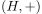
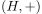
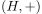
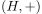
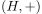

Ein Kommutativer Halbring ist ein Halbring mit zwei kommutativen Verknüpfungen  und
Author: Anton Zakrewski
Email: anton.zakrewski@campus.lmu.de
 mit zwei kommutativen Verknüpfungen  und
mit zwei kommutativen Verknüpfungen  und  mit zwei kommutativen Verknüpfungen  und
mit zwei kommutativen Verknüpfungen  und